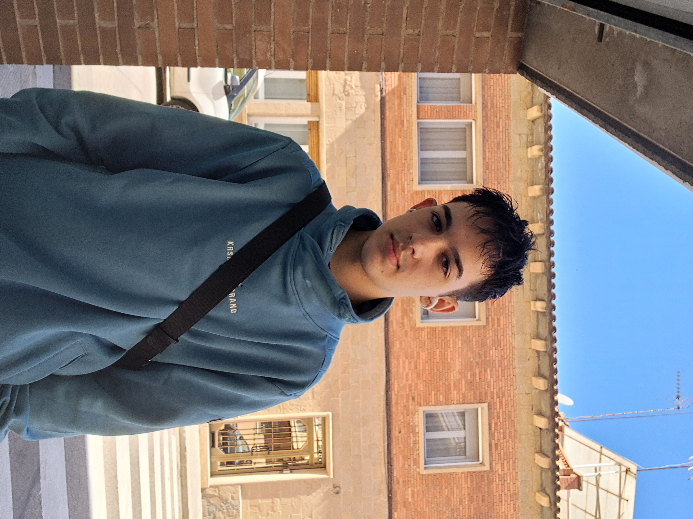
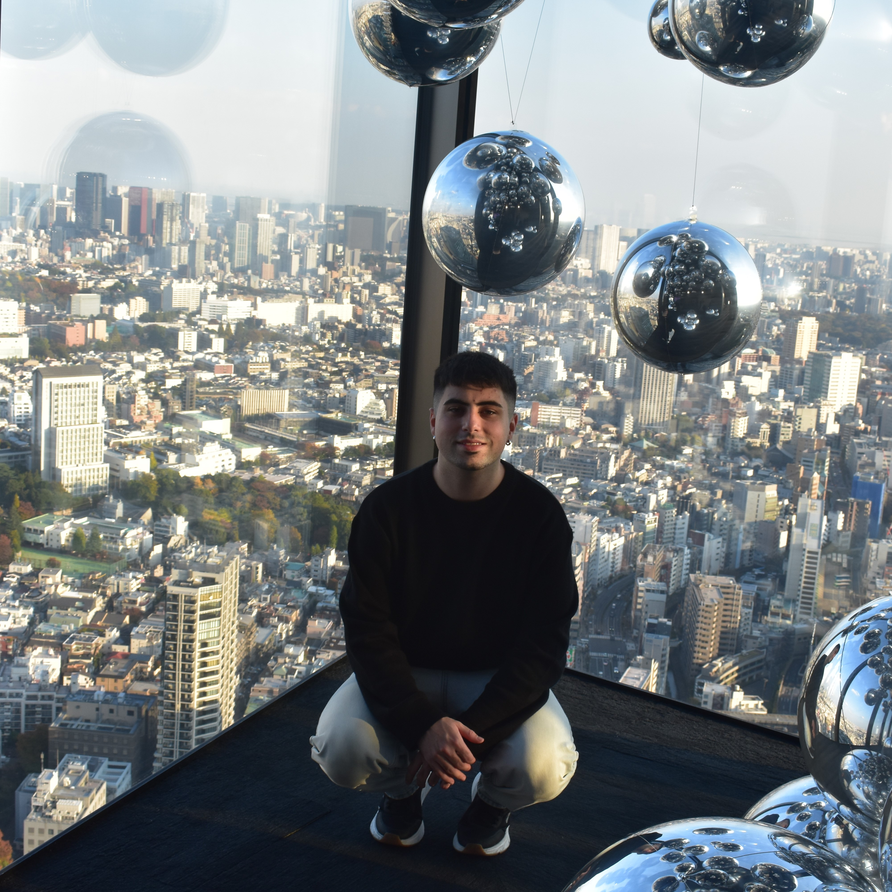
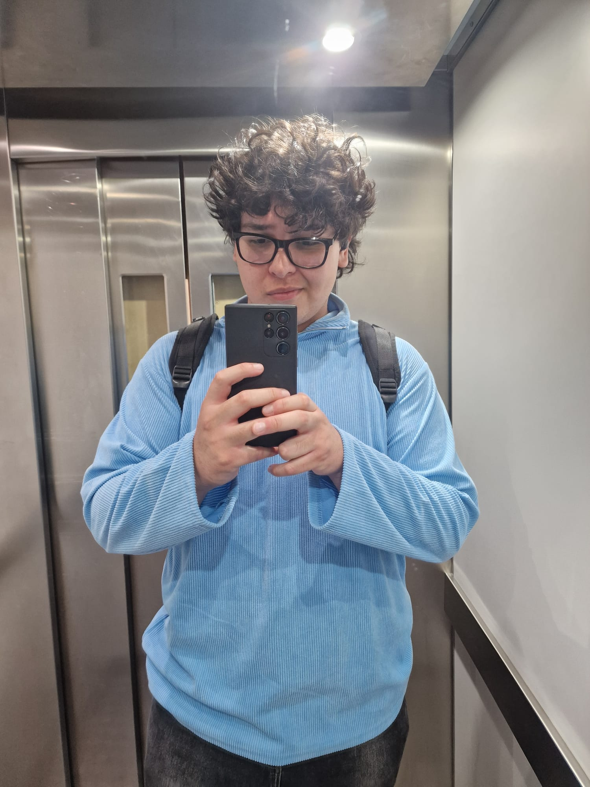
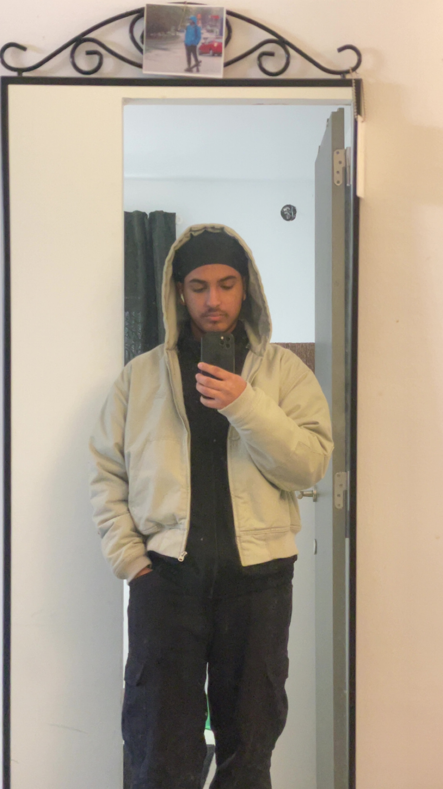

Projecte setmanal · DAM 1
Digitalització aplicada
Recull dels workshops realitzats durant la setmana i dels coneixements que hem adquirit en cadascun.
Veure els workshopsEl nostre equip
Quatre alumnes, un projecte comú
01

Joan Mercé

Josep Maria Soler

Prabhjot Singh
Contingut
Workshops de la setmana
01
Sistemes operatius
Linux i virtualització
→ 02Control de versions
Git i GitHub
→ 03Programació
Desenvolupament de programari
→ 04Bases de dades
PostgreSQL i SQL
→ 05Disseny d'interfícies
Experiència d'usuari
→ 06Intel·ligència artificial
Eines i aplicacions
→ 07TI / IoT
Sistemes connectats
→ 08Conclusions
Valoració del projecte
→